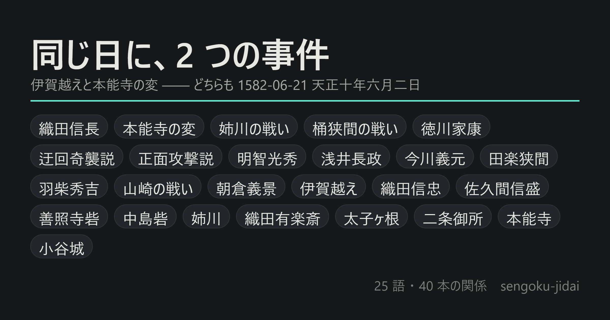

戦国時代
史実と諸説の並記を試した辞書。25 語 / 関係 40 本。桶狭間の進軍路は 2 説を同じ地図の上に置いてあります。

GlossPop で書き出した用語辞書。本文の語にふれると意味が出ます。
辞書も本文も 1 枚ずつに焼き込んであるので、GlossPop を持っていなくても、 サーバが無くても読めます（通信もしません）。
史実と諸説の並記を試した辞書。25 語 / 関係 40 本。桶狭間の進軍路は 2 説を同じ地図の上に置いてあります。
